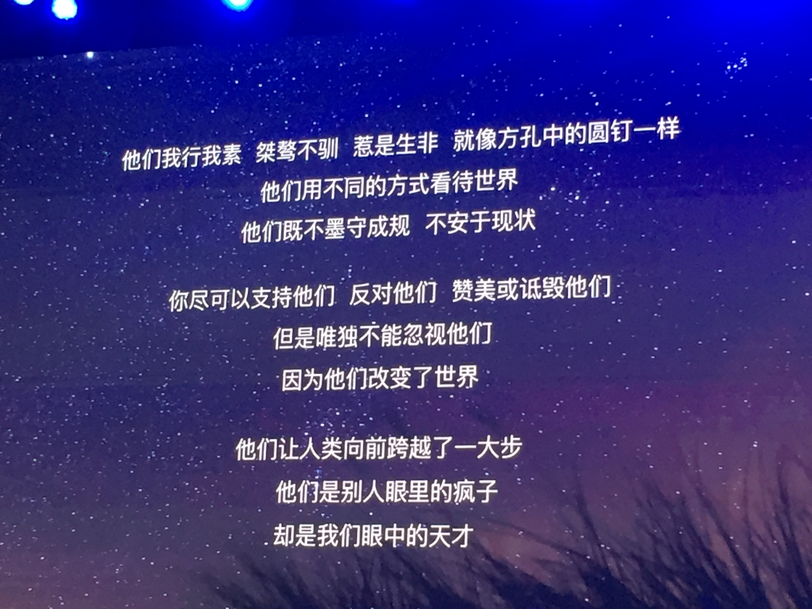
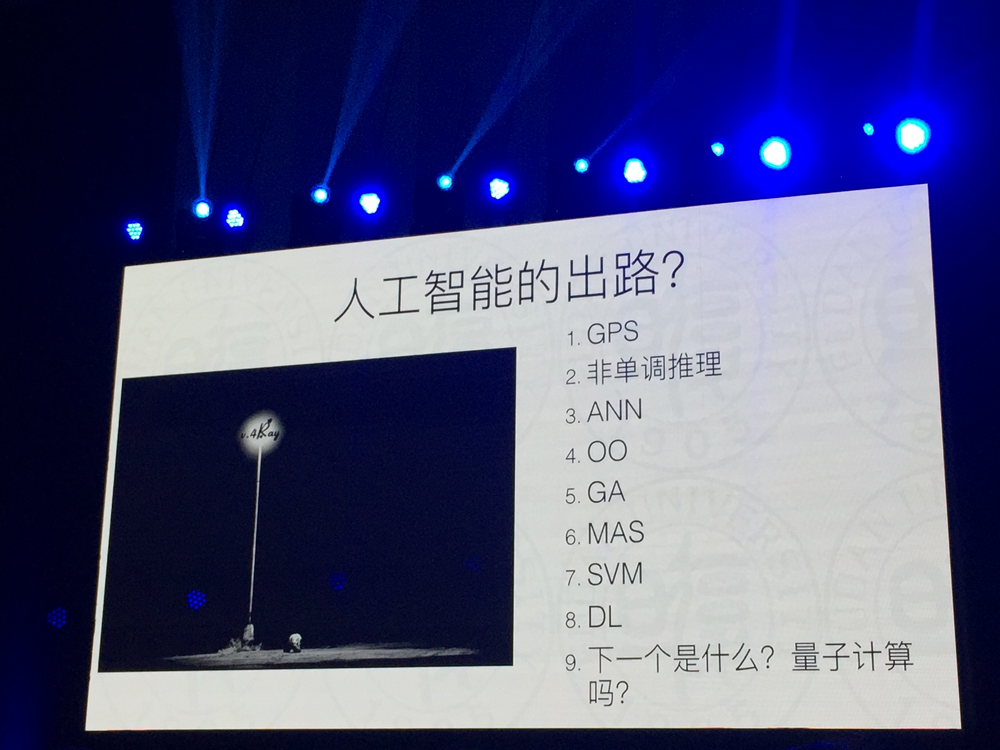
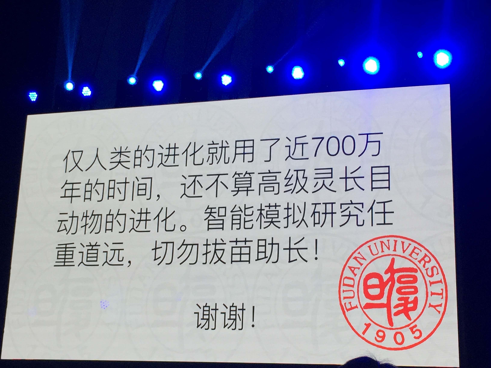
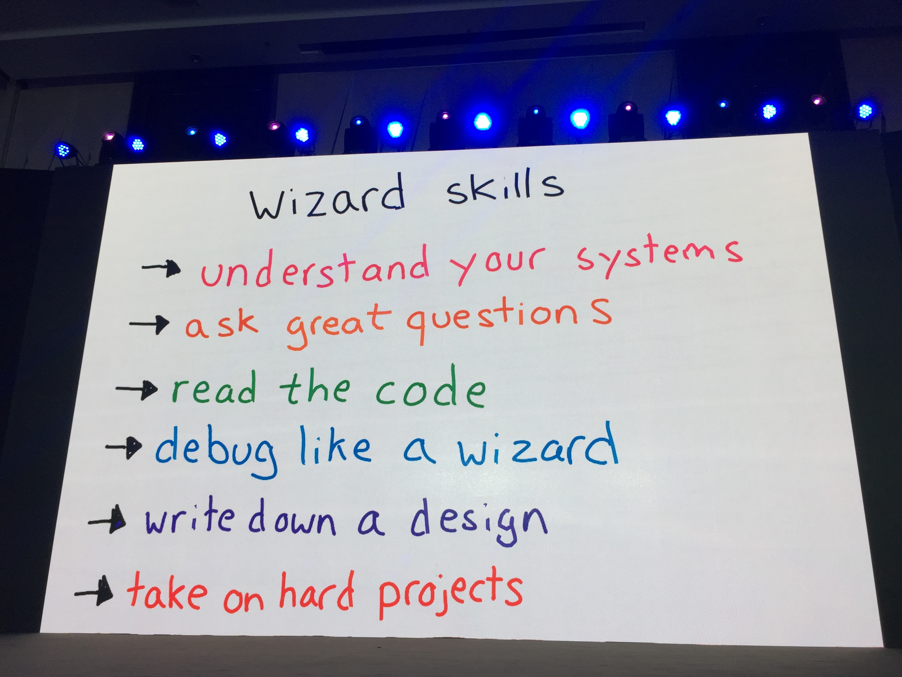
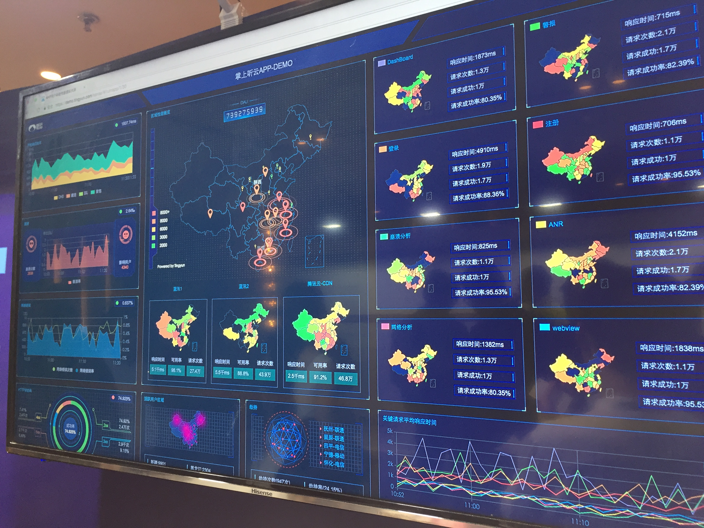

又是一年，Qcon 上海站。
从报名之前浏览会议内容简介开始，到第三天最后一场分享结束，有一种感受贯穿始终：今年的会议内容与去年的 Qcon 上海站大不相同，一个技术人的成长一定要能够跟上时代的变化。因为“一个人的命运啊，当然要靠自我奋斗，但是也要考虑到历史的进程。”
去年参加完 Qcon 后，结合自己的经历，写了一篇关于前端的一些思考，提到了当时大会比较火的几个词是：前端、微服务、大数据、云平台。而今年很难用几个关键词把会议内容概括起来，因为内容涉及的很广泛。如果一定要总结出几个相对火热的关键词，我把它概括为：人工智能、机器学习、大数据、云计算。
下面以我参加的分享内容为主线，来沉淀一下本次技术大会的收获。
第一天
重拾极客精神，提升技术认知
这是 Qcon 上海的开场活动，可以称其为极客邦科技的新产品极客时间的发布会。在半个小时的环节中，有四点让我有感触。
一是坚持去做一件事，并把这件事情做好做成。如果没记错的话，极客邦科技在国内做技术分享已经做了10年。自己所在的公司丁香园，已经做了17年。在成就一件事情的过程中，其中必定包含着酸甜苦辣，如果事情的结果是好的，抛开其中包含的商业因素等，整个付出的过程还是值得点赞的。回归到个人，可以问自己几个问题：自己在未来生活中的方向是什么呢？在向着这个方向前行的过程中，应该去做哪些事情？去做这些事情的过程中，自己能坚持多久呢？
二是当今这个时代，至少在国内，知识和知识付费还是大有可为的。知识付费这几年很火，得到、知乎live、各种在线教育等产品层出不穷。这些产品本质上还是抓住了人的一些本性。如果自己从一个用户的角度去仔细思考这些产品的定位和设计，还是蛮有趣的。朦胧中，我认为将来会有一款垂直于医疗健康领域的知识付费产品成为爆款。拓展一下，作为一个技术人员，可以去思考在知识付费的浪潮中，是不是可以做些什么？
三是极客邦赞助了 Vue.js 企业一年营收的千分之三。企业回馈开源社区这件事，不多说，打call就是了。
四是关于极客这个词。看图说话：

“深蓝” 20 年之后的人工智能
原以为自己是个人工智能的门外汉，加上演讲者是复旦大学计算机科学技术学院的教授和博导，心中暗想本场分享的收获要大打折扣了。结果这个教授的演讲功力十足，给大家带来了一场酣畅淋漓的关于人工智能的演讲。整场分享包含了他个人很多独到的观点。分享开始他便声明以下内容观点仅代表个人，所以目前在 Qcon 官网也找不到关于本次分享的 PPT。下面为当时拍照记录下的两张图：

这张图片左侧的图片是一个在灯下找钥匙的故事，当有人问灯下找钥匙这个人确定钥匙丢在灯下了吗，灯下的人回答说不确定，在灯下找是因为他仅仅可以看到灯光照亮的地方。图片右侧是列举了人工智能发展过程中，人们曾以为的“未来”。目前是第 8 个深度学习。

这张图是整场分享的最后一张 PPT。
自然语言人机交互开发者平台
这是阿里巴巴人工智能实验室北京研发中心总负责人带来的一场分享，目前在官网同样找不到这一场分享的 PPT。印象中，在刚开场时，不知道是不是受到了上一场教授分享的影响，还是本身演讲者的表达风格就是如此，稍微有些底气不足的样子。分享内容稍微让我入戏后，开始介绍起了阿里的一个人工智能平台，这让我有些出戏。这个平台给开发者提供了丰富的接口，“可以让完全不懂人工智能的人来轻松使用”。总体上，还是为他们在这条路上的探索点赞的。科研路漫漫归科研，将科研阶段性的成果成功的应用到商业是另当别论的。
【海外】AI 驱动全球支付业务革新 / Using AI to Revolutionize Global Payments
这是 PayPal 资深总监，全球风险管理建模团队负责人带来的分享，AI 和支付是两个我完全不熟悉的领域，整场分享听下来总的印象是：AI + 具体商业行为 = 更高的回报
由创业到独角兽，技术团队如何从跟随业务到驱动业务
微盟 CTO / 技术 VP
- 许多小的决定会影响最后的决策
- 方向要清晰
- 不同阶段，战略不同，适合最重要
- 团队里面需要很多好老师
- 需要且值得花时间去思考清楚“用途”
- 越底层，越需要通用设计
- 技术原则：简单、少付出、容错、灵活、公平
- 技术前瞻：突破舒适区、抓风口&不跟风、预测风口
- 先满足核心需求不代表提供半成品
- 时间是最大的成本，快速决策实验
- 反馈闭环很重要
- 因时而变，因势而治
接下来同样是两次关于管理的分享，分别是顺丰科技研发副总监的《向前一步——年轻技术管理者的涅槃重生》和腾讯的一个高级管理顾问带来的《从“作坊”到“专业”，团队管理三要点》。
前者是一个不到三十岁年轻的女孩子，分享中有值得思考学习的地方，但有些表达和观点和自己的认知有出入。后者是一个专业的顾问，演讲内容和风格都偏学院派，是从企业发展的维度来谈管理。
有机会单独写写管理相关的文字吧，修行在路上。
WebAR 技术与应用场景
第一天下午的第四场去听了 WebAR，进入会场的时候会场中人不多，显得有些冷清。正常分享的核心是介绍了阿里系 UC 浏览器自己研发的 UC WebAR，和自己预期的出入较大。
QCon 晚场｜7 Niubility 技术嘉年华之夜
这是第一次参加 Qcon 的夜场活动，活动分了七个方向的议题，包含了容器计算、深度学习、大数据、直播技术、大数据时代的运维技术、传统企业上云、Go的未来在什么方向。由于丁香医生最近在做上云，就侧重的听了一下上云相关的讨论。
第二天
Java 9 新特性
好久没写 Java 了，凭借着大学时的记忆，强行去听了一波儿 Java9 的新特性。
如何在 2016 年高效的打造一个 aPaaS 平台？
美洽 CTO
一场质量较高的分享。
aPaaS = Application + Platform as a Server
技术是实现商业目的的实现手段。
简单清晰的世界观：一切都是服务。对于前端来说，一切都是数据。
你不想要电钻，你只想要打好的孔。
每一次决策都是一次 Trade off（权衡，抉择，取舍）。
元数据
元数据就是数据的数据。
- 以不变应万变
- 将行为以数据的方式存储
- 数据库其实就是最好的元数据服务
- 元数据驱动是解决复杂业务的最好的抽象
微服务
- 服务大小适中
- 服务边界清晰
- 各团队能够各自安好
分布式系统
- Distributing everything
- 对无状态和有状态分别处理
- 数据安全，系统高可用，流量分散都需要分布式系统来解决
Golang
发展最迅猛的服务端语言。
其他
- 归根结底互联网行业的资产只有人
- 架构不是用来救火的，而是一开始就要想清楚的
- 人不是越多越好
- 用人也不能只看履历和名气
- 技术是这个行业最大的变量，用好它
淘宝前端工程体系：DEF
之前办丁香园首届前端沙龙时，请了在阿里手淘工作的大学校友来分享，他的分享内容涉及到了 DEF。通过这次分享更加了解了 DEF 体系。这是一套优秀的关于前端工程化的实践，点赞。
前端工程不是万金油，个人或小团队适当工具化即可，不同的业务形态和组织结构有与之匹配的工程解决方案。
面向 SPA 与 Hybrid 应用的前端工程体系与实践经验
有些失望。
架构服务于业务，工程体系服务于架构。
WebAssembly 核心原理、应用与未来展望
WebAssembly 是什么？
- 是一种以 .wasm 作为后缀的二进制文件
- 可以通过 JS 接口直接在浏览器加载、解析和运行
- 运行在浏览器的安全沙箱内
从 HTTP2 到 QUIC——QQ 空间 Web 加速实践
HTTP2 + QUIC
极客之夜｜极客的时间都去哪儿了？
夜场活动是池建强、陈皓、二爷、朱赟他们四个人的一个对话交流。交流之后有现场观众交流互动环节。
有一个问题想提问，但是没有去提问。
- 仔细思考后，隐约有了答案
- 每个人的阅历不一样，回答也不一样，回答的内容也不定适合自己
现场观众的问题，实际上只要自己多思考多实践，都能解决的。
第三天
【海外】未来的编程和 C++ 的作用
C++之父 Bjarne Stroustrup
【海外】如何成为行家——系统工程师修炼之道
Stripe / 软件工程师
印象最深，最喜欢的一场。
真正的热爱。这种热爱会传递、感染他人。
演讲 PPT 所有内容均是自己画的。

比萨的故事——Microservice & Serverless
偏介绍 AWS 的一个服务。
怎样构建产品和技术之间的合作氛围
本质上是 owner 心态，把对方当成自己人，大家一起把事情做成。
越过山丘，已回不了头
一个从技术转产品多年的产品经历的自述和思考。
Kotlin 实现 DSL
了解了一下 Kotlin。
TypeScript 的发展进程
自从 15 年底在 Angular1 中使用 TS 后，就很喜欢 TS，认为这是大型前端项目的最佳选择。所以果断去听了这场分享，想知道他人眼中 TS 的发展进程是怎样的。
其他
小米直达服务
一种新型的应用形态
听云
应用性能监控平台

思考
教别人做人做事要慎重 报道出了偏差是要负责的
知行合一